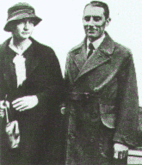

| |
|
1932
James
Chadwick atomun içinde elektrik yükü olmayan bir parçacýk
olduðunu keþfetti. Bu parçacýða nötron adýný
verdi.
|
| 1933
A.
N. Kolmogorov, olasýlýklar hesabýnýn aksiyomatik kuramýnýn
temellerini attý. Bu, günümüzde de kullanýlan olasýlýk
kuramýnýn baþlangýcýdýr.
|
| 1934
  Frederick
ve Irene Joliot-Curie, çeþitli elementleri polonyum
atomundan salýnan alfa parçacýklarý
(artý yüklü helyum çekirdekleri) bombardýmanýna
tutarak ilk yapay radyoaktifliði elde ettiler. Frederick
ve Irene Joliot-Curie, çeþitli elementleri polonyum
atomundan salýnan alfa parçacýklarý
(artý yüklü helyum çekirdekleri) bombardýmanýna
tutarak ilk yapay radyoaktifliði elde ettiler.
|
| 1935
ABD'li
deprembilimciler Charles Richter ve Beno Gutenberg, deprem
ve öteki sismik olaylarýn büyüklüklerini belirlemek için
bir öiçek hazýrladý. |
| 1938
Fisyonun
bulunuþu. Otto Hahn, Strassman'la birlikte uranyumun
ürünlerinden birinin, daha hafif olan radyoaktif baryum
elementi olduðunu buldular ve bunun, uranyum atomunun
daha hafif iki atoma bölündüðünü kanýtladýðýný
anladýlar.
|
| 1939
Igor
Sikorsky, 1939 yýlýnýn baþýnda yapýmýna baþladýðý
VS-300 adlý helikopterin yapýmýný eylül ayýnda
bitirdi ve ilk baþarýlý helikopter uçuþunu gerçekleþtirdi. |
|
| 1932
ABD'li
birfizikçi olan Edwin Herbert Land, fotoðaflarýn
banyo ve baský iþlerinin tek aþamada yapýlmasýný
saðlayan bir yöntem geliþtirdi. Iþýðýn
kutuplanmasýyla ilgilenen Land, mikroskopaltý
boyutlardaki iyodokinin sülfat kristallerini belirli
bir doðrultuda yönelmiþ halde dizmeyi ve bu dizileri
ince plastik bir katman üzerine aktarmayý baþardý.
Bu çalýþmalarý sonucunda geliþtirdiði ve Polaroid
3 kaðýdý olarak adlandýrdýðý kutuplayýcý kýsa
sürede yaygýn kullaným alaný buldu. |
| 1934
ABD'li
kimyacý Wallace Carothers naylonu buldu. 1938'de ticari
üretimine geçilen naylon, bileþim yoluyla hazýrlanan
ilk sentetik polimer lifi olmuþ ve yapay elyaf
sanayisinin doðuþunu hazýrlamýþtýr. |
| 1935
Japon
fýzikçi Hideki Yukawa, atom çekirdeðindeki parçacýklarý
bir arada tutan kuvvetin taþýyýcýsý olarak mezon
adlý parçacýðýn varlýðýný öngördü ve bu parçacýðýn
niteliklerini kuramsal olarak belirledi.
|
| 1935
Radarýn
bulunuþu. Ýngiliz bilim adamý Robert Alexander
Watson-Watt, uçaklara radyo dalgalarý gönderip, yansýyan
dalgayý alarak ve dalgalarýn gidiþ dönüþ süresini
ölçerek uçaðýn varlýðýný ve uzaklýðýný 110
km mesafeden belirleyebilen bir sistem geliþtirdi. Bu,
o güne deðin yapýlmýþ ilk pratik radar sistemiydi.
|
| 1939
DDT
(diklorodifeniltrikloroetan) ilk kez böcek ilacý
olarak kullanýldý. Ýlk kez 1874 yýlýnda üretilen
DDT'nin böcek öldürücü etkisi ilk kez Ýsviçreli
kimyacý Paul Hermann Müller tarafýndan keþfedilmiþtir.
Bu ilacýn kullanýmý ileriki yýllarda çevreye ve
insanlara da zarar verdiði gerekçesiyle yasaklanacaktýr.
|
|
|